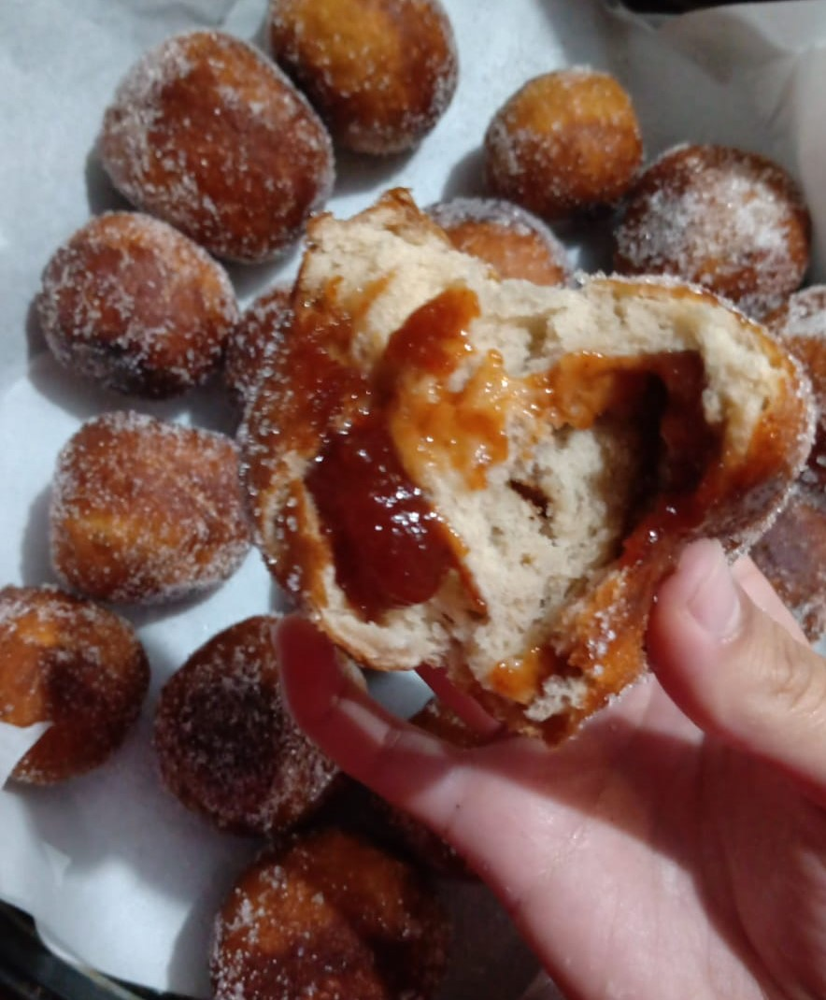

Confeitaria e Padaria
Sonho de Goiabada
Ingredientes:
- 4 xícaras de farinha de trigo;
- 4 colheres de sopa de açúcar;
- Meia colher de sal;
- 1 sachê de fermento biológio(10 gramas);
- 4 colheres de óleo.
Modo de preparo:
1. Misture primeiro os secos e depois misture tudo junto formando uma massa homogênea;
2. Deixe a massa descansar por 40 minutos;
3. Depois do descanso da massa, corte ela em pedaços do tamanho que você quer seus sonhos, abra e coloque a goiabada, forme as bolinhas e deixe-as descansar por 30 minutos numa forma bem untada com óleo e farinha;
4. Depois desse outro descanso, frite;
5. Depois de ter deixado o óleo escorrer, passe pelo açúcar;
5. Coloque num recipiente com papel toalha ou papel manteiga.
Bom apetite!
